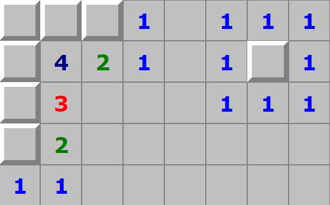

Click on a tile to uncover it. Avoid uncovering tiles with mines underneath them (your first move will be random). If the tile contains a number, it indicates how many mines will be found in the tiles adjacent to it. Use these numbers as clues to uncover other safe tiles.
Once all safe tiles have been uncovered, you have won the game!
Click the mine button in the top-middle of the screen to allow yourself to mark tiles with flags where you know the mines are. (The button toggles whether clicking a cell uncovers it or places a flag.)
You can also long press or right click on the tiles to mark them with flags on desktop and android.
The smiley face button in the top-middle of the screen can be clicked to start a new game at any time. Each game board is randomly generated.
The number in the top-left of the screen indicates the number of mines to be found. Click this number to change the game difficulty at any time (NOTE: this starts a new game with a new board). By default, the game is set to "Easy".
| Difficulty | Mines | Rows | Columns |
|---|---|---|---|
| Easy | 10 | 10 | 10 |
| Intermediate | 40 | 16 | 16 |
| Expert | 99 | 30 | 16 |
The number in the top-right is a timer which starts when you have uncovered your first tile and stops when you have located all mines.
Oops! Looks like your screen is not large enough to play in landscape mode. Please rotate to portrait orientation to play.